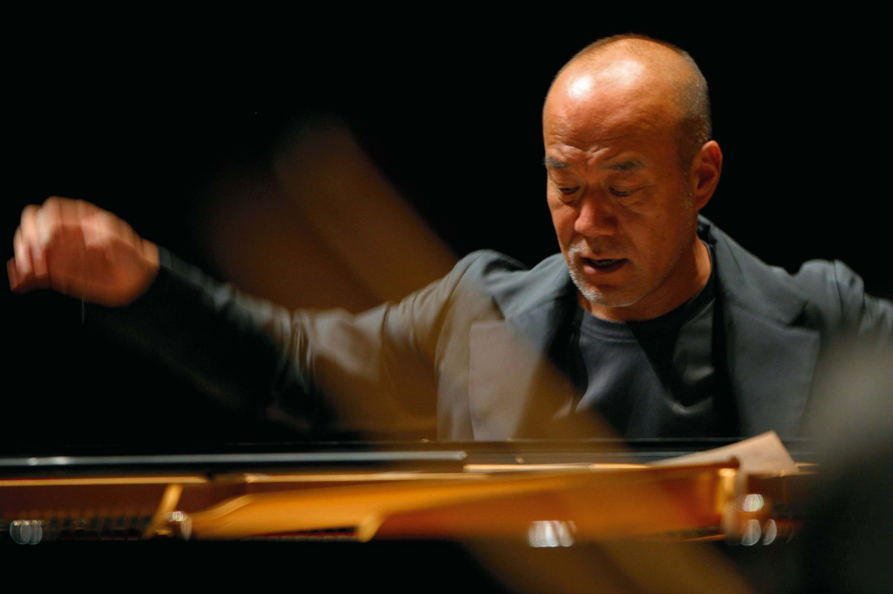

久石譲
1950年12月6日生まれ
国立音楽大学作曲家に在学中より、現代音楽の作曲家として活動を始め、多くのコンサートの作曲・演奏・プロデュース等を担当する。
映画「風の谷のナウシカ」以降、「水の旅人」「KidsReturn」などの音楽を手がけ、1992年より3年連続日本アカデミー賞最優秀音楽賞をはじめとした数々の音楽賞を受賞。
又ピアノソロや室内楽、オーケストラなど演奏活動も国内外問わず精力的に行っており、ニューヨークのカーネギーホール、フランスのパレ・デ・コングレ・ド・パリなどアメリカの各都市やヨーロッパの各国、オーストラリアなど世界各地で公演している
日本映画音楽界には欠かせない存在となっている。
